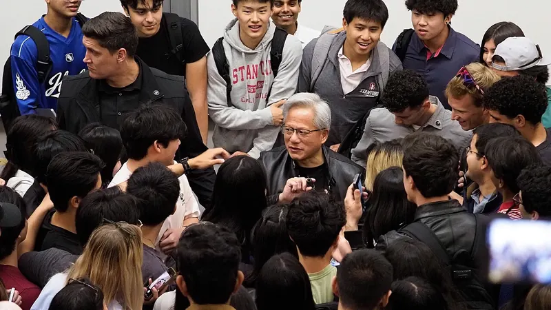

Jensen Huang resigns as Nvidia CEO; CFO Colette Kress named interim chief
Nvidia said Thursday that its board had accepted co-founder Jensen Huang’s resignation as president, CEO and a director, effective immediately, and named chief financial officer Colette Kress as interim CEO. Shares finished 4.3% lower after falling as much as 13% at the open.

Full story, sources & checks5 sources
Nvidia said Thursday that its board had accepted co-founder Jensen Huang’s resignation as president, chief executive and a member of the board, effective immediately, and appointed chief financial officer Colette Kress as interim CEO. A Form 8-K filed with the U.S. Securities and Exchange Commission said the board accepted the resignation on Nov. 11 and also named longtime director Harvey C. Jones, a former Synopsys chief executive, as the company’s first board chair. Kress, 59, has been finance chief since 2013 and will keep that job while a search for a permanent CEO considers internal and external candidates. Nvidia’s statement thanked Huang for 33 years at the company and said it still plans to report fiscal third-quarter results on Nov. 17. CNBC said the shares closed down 4.3%, after sliding more than 13% at the open, and remained above a $4 trillion market value by the close. The resignation follows reports, denied by Beijing, that U.S. intelligence considers Alice Huang, a woman with whom he had a relationship, a Chinese intelligence asset, and a New York Times report, cited by CNBC and others, of a second relationship with Nvidia vice president Kimberly Powell. CNBC, citing the Times, also said President Donald Trump called Huang on Tuesday and urged him to fight to keep his job, and later called the episode a “horrible thing.”
Note: Ongoing story: this morning’s edition reported that the board had met and that no decision had been announced. The spying allegation comes from U.S. intelligence assessments reported by news outlets; it has not been proven, and China has denied it. The Trump phone call was reported by the New York Times and is relayed here from CNBC. Kress’s age and Jones’s background are from the SEC filing.
Basis: Reported — Reported by the linked news outlets; attributed to them, not independently confirmed by Donna Daily. Official statement — A government, official body or company's own statement, figures or proposal, attributed to it. Unnamed sources — Rests partly on sources the outlet did not name. Allegation — Claimed, charged or argued in court; not proven.
Sources & checks
- NVIDIA Announces CEO TransitionNVIDIA Newsroom · Nov 12, 2026
- Donna Daily evening source check, Nov 12 2026 (Nov 12, 9:08 PM EST): supports — Board announced Huang resigned as president, CEO and a board member, effective immediately; CFO Colette Kress appointed interim CEO and will keep the CFO role; Board initiating a search for a permanent CEO and will consider internal and external candidates; Harvey C. Jones appointed first-ever chair of the board; quote of confidence in Kress; Third-quarter fiscal 2027 results still scheduled for Tuesday, Nov 17, about 1:20 p.m. PT
- Link opened (HTTP 200) · automated link check, Nov 12, 9:19 PM EST (checks the link opens, not the claims)
- NVIDIA Corporation Form 8-KU.S. Securities and Exchange Commission · Nov 12, 2026 (event date Nov 11)
- Donna Daily evening source check, Nov 12 2026 (Nov 12, 9:08 PM EST): supports — Board accepted Huang’s resignation as president, CEO and director on Nov 11, effective immediately; Appointed Colette M. Kress, age 59, interim CEO; she has been EVP and CFO since 2013; Appointed Harvey C. Jones, age 73, as chair; director since 1993 and managing partner of Square Wave Ventures since 2004; Exhibit 99.1 is a press release dated Nov 12, 2026; signed by Kress as interim CEO
- Link opened (HTTP 200) · automated link check, Nov 12, 9:19 PM EST (checks the link opens, not the claims)
- Nvidia CEO Jensen Huang resigns: Live updatesCNBC · Nov 12, 2026 (updated 8:58 PM ET)
- Donna Daily evening source check, Nov 12 2026 (Nov 12, 9:09 PM EST): supports — Shares closed down 4.3% after hitting a 52-week low early and paring losses; opened down more than 13%; Stock rose just above a $4 trillion market cap by the close after trading below that level earlier; CNBC, citing the New York Times, said Trump called Huang on Tuesday and urged him to fight to keep his job, and later called the episode a “horrible thing”; Recounts the reported relationships with Alice Huang and Kimberly Powell and Huang’s Sunday staff apology
- Link opened (HTTP 200) · automated link check, Nov 12, 9:19 PM EST (checks the link opens, not the claims)
- Nvidia’s Jensen Huang resigns, chipmaker names CFO Colette Kress as interim CEOTechCrunch · Nov 12, 2026
- Donna Daily evening source check, Nov 12 2026 (Nov 12, 9:08 PM EST): supports — Board accepted the resignation on Wednesday, according to the regulatory filing; Early-session share drop and context on Huang’s stake and lack of supervoting rights; Jones described as managing partner of Square Wave Ventures and a director since 1993
- Link opened (HTTP 200) · automated link check, Nov 12, 9:19 PM EST (checks the link opens, not the claims)
- Markets whiplashed as Jensen Huang quits NvidiaCNA · Nov 12, 2026
- Donna Daily evening source check, Nov 12 2026 (Nov 12, 9:12 PM EST): supports — Shares plunged 13% at the New York open before moderating and finished down 4.3%; Nasdaq finished 0.4% lower; CNA cited strength in Broadcom and AMD
- Link opened (HTTP 200) · automated link check, Nov 12, 9:19 PM EST (checks the link opens, not the claims)